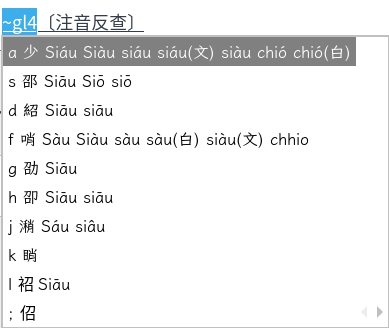

白話字、台羅攏會通
免揀拼音系統：tsiah、chiah 攏揣會著「食」。
特色
免揀拼音系統：tsiah、chiah 攏揣會著「食」。
先拍音節揣候選，需要才補數字調，親像 ho2。
揀字的時看會著拼音註解，順紲確認讀音。
預設照 LKK 規範自動混寫；切「手動漢羅」了後，佗一个詞欲寫羅馬字，予你家己標記。
整句羅馬字攏拍好，按空白鍵就送出；中途嘛會當用 Tab 挑字。
漢羅模式全形標點拍了隨出；` 開 50 類符號，`e
揣 Emoji，拍「台灣」會當選 🇹🇼。
? 萬用查字——佗一个位置攏會當查音節- 斷音節，Tab
逐字揀，揀字就是揀調
-- 輕聲隨拍隨出——「轉--來」「食--飽」無問題\ 共伊標記做羅馬字
Ctrl+標點 臨時翻轉標點寬度網站功能
寫台文毋但是輸入法：仝一个網站閣有免安裝的網頁試拍、漢羅⇄羅馬字轉換、寫作檢查、詞彙查詢、文法筆記，佮準備台語檢定的練習工具。 逐个功能攏用仝一套詞典佮轉換核心——你佇轉換頁看著的讀音，就是輸入法候選看著的讀音。
Windows、macOS、Linux、Android 攏有，裝好佇任何軟體拍台文。
免安裝，瀏覽器內就是真的 Rime 引擎，先試看覓合毋合你。
聽寫（教典原音）、打字練習佮模擬考、推薦用字選擇、華語→台語造句、變調、弱點複習、學習單列印；進度存佇你的瀏覽器，會當匯出備份。
漢羅文章轉台羅 TL 佮白話字 POJ（連讀變調、輕聲），POJ／TL 嘛會當倒轉漢字。
台羅、白話字、漢羅攏會用得：檢查拼音系統、調號、音節、連字符、推薦用字佮華語直譯，逐項有建議。
拍台語詞抑是華語意思，揣出 TL、POJ 佮教典例句。
本站整理的台語文法筆記，佮轉換頁的用字、文法提示連做伙。
詞庫數據
數字直接對出貨的 phah_taibun.dict.yaml 算出來，由
tests/test_landing_stats.py
釘予牢——頁面寫的，就是字典內底的。
ChhoeTaigi 9 本辭典 353K 筆原始字詞 → 清洗、去重、驗證 → 228,763 个詞條；排序閣加權 7 个語料庫詞頻、23 个外部資源。看資料按怎來、統計按怎算
拼音輸入
寫台文共 POJ 白話字佮 TL 台羅攏囥佇仝一套 Rime 方案內底，常見差異自動對應。你照家己慣用的方式拍，輸出的時才切漢羅 TL、漢羅 POJ、全羅 TL、全羅 POJ。
白話字 POJ 專頁：鍵位、o͘、範例tsiah png食飯chiah png食飯gua ai li我愛你
goa ai li我愛你
taidfgiv臺語（Telex 方案）
ziahv食（Telex 方案）
Telex 是平行方案，詞典佮輸出攏相仝；按 F4 選「寫台文(Telex)」就用會著。
tsiah png食飯
tsiah8 png7食飯
ziahv pngw食飯
記法：d＝5、w＝7、y＝3、v＝2／8、q＝9、x＝1／4（選配）；z
簡寫 ts，f
做音節連字號。完整鍵位佮調類頻率圖見使用說明。
比較
搜尋：意傳台語輸入法
寫台文有 POJ／台羅混打、漢羅輸出、注音反查，閣會當佇真濟平台安裝。
搜尋：教育部台語輸入法
寫台文支援 Windows、macOS、Linux；候選看有讀音，嘛會當逐字揀。
搜尋：信望愛台語輸入法
寫台文用 Rime，Linux 嘛裝會起來；方案佮詞庫攏佇 GitHub 開放維護。
搜尋：最好用的台語輸入法
免聲調、POJ／台羅混打、漢羅／全羅切換；詞庫超過 20 萬詞條。
資料來源：ChhoeTaigiDatabase、iCorpus 臺華平行新聞語料庫、楊允言 2009 詞頻調查、教育部輸入法詞庫增補、教育部臺灣台語常用詞辭典、學科術語臺灣台語對譯、本土語言標注臺灣地名；完整清單佮授權看資料來源說明。

注音反查
按 ~ 進入注音反查，用華語字揣台語候選——予拄開始寫台文、抑是袂記得讀音的人真方便。
sīng酒 改出
sēng酒，大寫音節嘛會轉；字典修正斜線讀音拆毋著的詞（梅子雞袂閣佔
kue）；Telex 方案嘛會學你揀過的詞。
mn̂g 標佇 ng 的 n；oo
帶調出 o͘。
oa／oe 標 o（gōa、hōe）、
ui 標 u（tùi）——字典候選佮輸出一致。
x 調鍵（第 1／4 調）；Ctrl+標點
臨時翻轉標點寬度。
o͘ 鍵盤打法說明修正做
oo。
安裝
寫台文毋是另外一个輸入法引擎，是 Rime 的台語方案：Windows 用小狼毫，macOS 用鼠鬚管，Linux 用 fcitx5-rime／ibus-rime，Android 用 Trime。
PhahTaiBunSetup.exe 雙擊安裝。電腦還沒有小狼毫
Weasel 時，安裝包會自動一起安裝（會跳一次系統管理員權限確認，按「是」）。
irm https://raw.githubusercontent.com/soanseng/rime-phah-taibun/main/install_windows.ps1 | iex（互動式：會詢問要安裝寫台文、嘸蝦米 rime-liur 或兩者都裝；修改設定前會先備份 default.custom.yaml，既有輸入法可保留）。
curl -fsSL
https://raw.githubusercontent.com/soanseng/rime-phah-taibun/main/scripts/install_macos.sh
| bash
git clone 之後執行
./install.sh，或把
schema/、lua/、rime.lua
複製到 ~/Library/Rime/ 後重新部署。
git clone https://github.com/soanseng/rime-phah-taibun.git
cd rime-phah-taibun
./install.sharm64-v8a 版（大多數手機；模擬器用
x86_64），允許「安裝未知應用程式」後安裝。寫台文＋注音＋嘸蝦米全部預裝、介面繁體化、點候選直接上屏，長按中文鍵有寫台文面板，不必再部署。
https://github.com/soanseng/rime-trime-taigi，開啟「Filter
APKs by CPU Architecture」（預設）就會選到正確的架構，之後自動抓新版。
gua beh khi tshit tho →「我 beh 去
tshit-thô」。漢羅↔全羅、TL↔POJ 長按中文鍵開面板切換。
替代：官方同文＋一鍵包——F-Droid 安裝
com.osfans.trime，從本專案 Releases
下載 PhahTaiBun-Trime.zip（或加嘸蝦米的
-liur 版）解壓到
Android/data/com.osfans.trime/files/rime，重新部署後選「寫台文(台)」。
完整步驟、路徑與按鍵對照。
更新寫台文
Windows 覆蓋安裝最新 PhahTaiBunSetup.exe 或重跑
PowerShell；macOS 重跑 curl 指令；Linux
git pull --ff-only && ./install.sh；Android
用最新的 PhahTaiBun-Trime.zip 覆蓋後重新部署。每個
Release 附 SHA256SUMS 可驗證下載。
予 Claude／Codex
毋熟 Rime 資料夾、終端機抑是重新部署的人上適合；AI 會照你的系統，揀 Windows、macOS 抑是 Linux 的安裝步驟。
請幫我在這台電腦安裝寫台文 rime-phah-taibun。請先確認我的作業系統與是否已安裝 Rime 核心：Windows 用小狼毫 Weasel，macOS 用鼠鬚管 Squirrel，Linux 用 fcitx5-rime 或 ibus-rime。若尚未安裝 Rime，請引導我先安裝官方 Rime 核心。
我已經下載或 clone 這個專案。請在專案根目錄執行適合我系統的安裝方式：
- Windows：執行 install_windows.ps1，保留既有 Rime 設定、自訂詞庫與 rime.lua。
- macOS：執行 scripts/install_macos.sh，必要時指定目前專案路徑。
- Linux：執行 ./install.sh，自動偵測 fcitx5-rime 或 ibus-rime。
請不要刪除或覆蓋我原本的其他 Rime 輸入方案。安裝後請協助我重新部署 Rime，確認系統輸入法已切到小狼毫／鼠鬚管後，按 F4 或 Ctrl+` 確認清單中有「寫台文(台)」，並測試輸入 gua beh khi tshit tho 是否能看到台語候選。創作者
寫台文由 陳璿丞醫師 發起——一个屏東大漢囡仔，想共母語揣轉來，嘛想共台語書寫對「懂規則的人才會用」推向前「會講台語就會曉開始」。專案整合 Rime、ChhoeTaigi 詞庫、語料頻率、LKK 用字規範佮 21 个 Lua 模組。
本底我攏用嘸蝦米，用甲真慣勢；Linux、Windows、Mac 嘛用 Rime 用真濟冬。10 外年以前，我猶真菜的時陣，捌掠準講家己會曉寫一个台語輸入法——hit 陣失敗矣。這馬有 AI，資源嘛一年一年閣較濟，我就寫一个家己會用的：家己拍字的艱苦、學習過程的艱苦，攏囥佇這个輸入法內底，一邊開發、一邊重學。所以這个方案是照我的環境做的：嘸蝦米佮寫台文做伙用，主要 Linux 佮 Android，Windows 有時仔爾爾。
另外一爿，真濟台語文學冊誠讚：漢羅看有，拼音煞袂曉——想學，著愛一字一字查；顛倒來看 POJ、TL 的時，閣想欲緊知影意思。所以我共輸入法的字典提來，閣做幾个網頁工具：漢羅⇄羅馬字轉換、詞彙查詢、文法筆記，佮會當練習、考試的網頁試拍。橫直，遮攏是我任性、做予我一个人用的。
常見問題
會講台語、知道大概怎麼拼，就可以開始。候選拼音註解、聲調省略與華語反查，都是為了降低入門門檻。
不必。預設「寫台文(台)」用無調和數字調就夠用。Telex 是 F4 裡的平行進階方案，給熟台羅、想連續補調的人；詞典和輸出與主方案相同，說明見Telex 段。
官方安裝包只有
Windows（PhahTaiBunSetup.exe）。macOS
用指令安裝，Linux 用 ./install.sh。Android
有客製 APK「寫台文 Trime」，只發佈在 GitHub Releases（F-Droid／Google Play 皆未上架），寫台文＋注音＋嘸蝦米全部預裝、免部署，也可用
Obtainium 自動追新版；或安裝官方同文 Trime／小企鵝 5 ＋ RIME
外掛，再從本專案 Releases 下載
PhahTaiBun-Trime.zip 一鍵包放入後重新部署。完整步驟見
Android 部署。
安裝流程會保留既有 Rime 輸入法、自訂詞庫與
rime.lua，再加入寫台文方案。
不一樣。寫台文只把有用的詞庫資料納入建置流程；操作仍維持寫台文設計：數字鍵打聲調，候選選字按 Tab 後用 asdfghjkl;，符號選單按反引號。
寫台文（Siá Tâi-bûn）是本專案的新名稱，舊名「拍台文」（Phah Tâi-bûn），改名後下載、更新與設定方式都不變。它與另一款手機 App「PhahTaigi 台語輸入法」是不同開發者的獨立軟體，兩者沒有關聯。